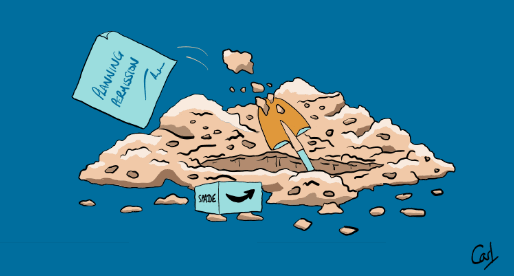
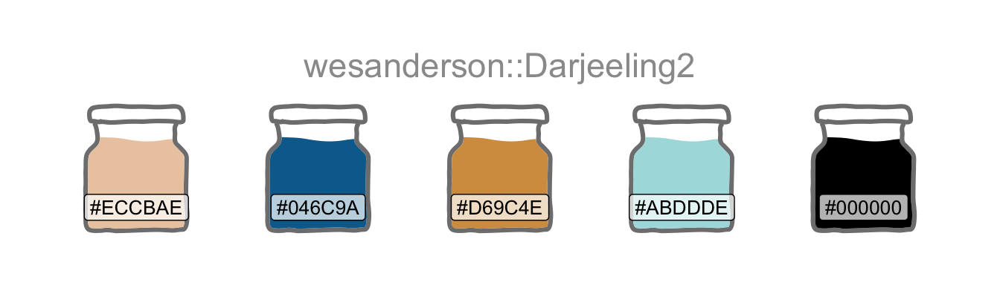
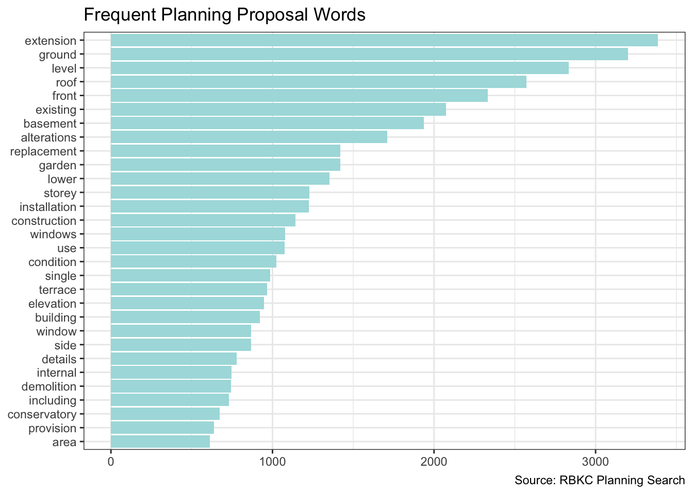
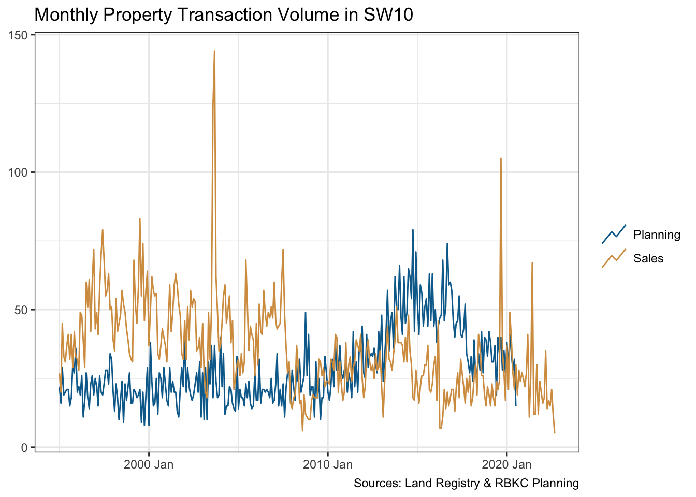
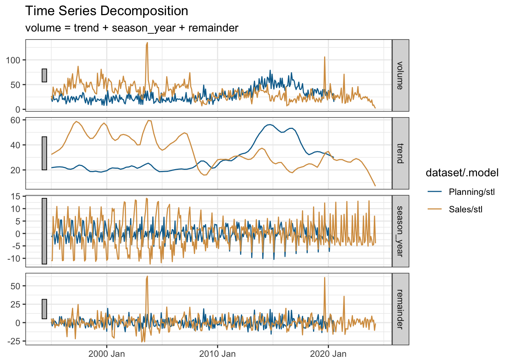
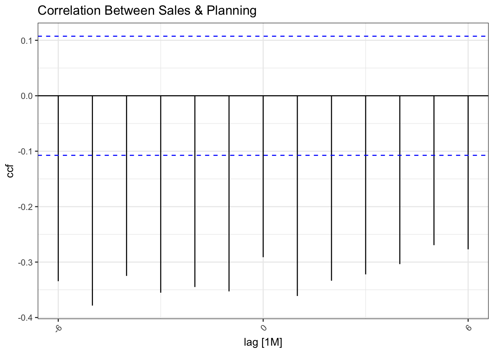
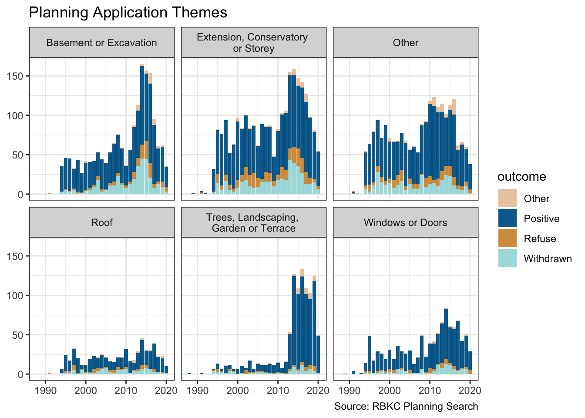

library(conflicted)
library(tidyverse)
conflict_prefer_all("dplyr", quiet = TRUE)
conflict_prefer("as_date", "lubridate")
library(rvest)
library(SPARQL)
library(quanteda)
library(quanteda.textstats)
library(tictoc)
library(htmlwidgets)
library(clock)
library(fabletools)
library(feasts)
library(tsibble)
library(DT)
library(ggfoundry)
library(paletteer)
library(usedthese)
conflict_scout()Digging Deep
R
time series
correlation
apps
tables
textual analysis
Do we see more planning applications when house sales are depressed?

In House Sales I looked at how a series of events damped down sales. By combining these sales data with planning applications I’d like to see if home owners “start digging” when they can’t sell.
Planning data is harvested with the kind permission of The Royal Borough of Kensington and Chelsea (RBKC). The code for these code chunks is not rendered out of courtesy to RBKC.
theme_set(theme_bw())
pal_name <- "wesanderson::Darjeeling2"
pal <- paletteer_d(pal_name)
display_palette(pal, pal_name)
case_df <- readRDS("case.rds")url <-
"https://www.freemaptools.com/download/full-postcodes/ukpostcodes.zip"
file_name <- basename(url)
url |> basename
download.file(url, file_name)geocodes <- read_csv("ukpostcodes.zip")The data need a bit of wrangling. And there is also the opportunity to try the newest column-wise enhancements to mutate: mutate_if and mutate_at have been superseded by mutate with across.
wide_df <- case_df |>
pivot_wider(names_from = X1, values_from = X2) |>
select(all_of(plan_colnames)) |>
mutate(
across(c(property_list, property_cons), \(vec) na_if(vec, "N/A")),
across(c(app_comp, decision), \(vec) na_if(vec, ""))
)
tidy_df <- wide_df |>
mutate(
dec_date = date_parse(dec_date, format = "%d %b %Y"),
dec_year = get_year(dec_date),
proposal_dev = str_to_lower(proposal_dev),
property_pcode = str_extract(property_add, "SW10[\\s]?\\d[[:alpha:]]{2}"),
property_pcode = str_replace(property_pcode, "SW10(?!\\s)", "SW10 "),
app_comp = str_to_upper(app_comp) |>
str_remove_all("[:punct:]") |>
str_remove_all("\\b(?:AND|LTD|CO|LIMITED|UK|GROUP|LLP)\\b") |>
str_squish(),
decision = fct_explicit_na(decision, na_level = "Other"),
decision = str_replace(decision, "/", " / "),
dec_lump = fct_lump(decision, prop = 0.03),
basement = if_else(str_detect(proposal_dev, "basement"), "Yes", "No"),
property_listed = case_match(
property_list,
c("II", "II*", "2", "2*") ~ "Yes",
.default = "No"
),
app_comp = replace_na(app_comp, "None"),
property_cons = if_else(property_cons == "" | is.na(property_cons),
"None", property_cons
),
proposal_dev = if_else(proposal_dev == "" | is.na(proposal_dev),
"None", proposal_dev
),
across(where(is.character), str_trim),
across(c("app_comp", "proposal_type", "property_cons"), factor)
) |>
left_join(geocodes, by = join_by(property_pcode == postcode))
tidy_df |>
count(dec_lump) |>
arrange(desc(n)) |>
rename("Decision" = dec_lump, "Count" = n)| Decision | Count |
|---|---|
| Grant Planning Permission / Consent | 5336 |
| Withdrawn by Applicant | 1123 |
| Other | 847 |
| Refuse Planning Permission / Consent | 752 |
| Discharge of Conditions - Grant | 626 |
| Raise No Objection | 418 |
quanteda (Benoit et al. 2018) to look at key words in context (kwic).
I’d like to review planning applications by theme. So I’ll first need to get a sense of what the themes are by plotting the words which appear most frequently.
plus_words <-
c("new",
"pp",
"two",
"one",
"dated",
"withdrawn",
"flat",
"x",
"permission",
"rear",
"first",
"second",
"planning",
"floor",
"erection"
)
words <- tidy_df |>
corpus(text_field = "proposal_dev",
doc_vars = c("dec_date", "proposal_type",
"decision", "dec_year")) |>
tokens(remove_numbers = TRUE, remove_punct = TRUE) |>
dfm() |>
dfm_remove(c(stopwords("english"), plus_words)) |>
textstat_frequency() |>
slice_head(n = 30) |>
mutate(feature = fct_reorder(feature, frequency))
words |>
ggplot(aes(frequency, feature)) +
geom_col(fill = pal[4]) +
labs(x = NULL, y = NULL,
title = "Frequent Planning Proposal Words",
caption = "Source: RBKC Planning Search")
Now I can create a theme feature.
remapped_df <- tidy_df |>
mutate(
theme = case_when(
str_detect(proposal_dev, "basem|excav") ~ "Basement or Excavation",
str_detect(proposal_dev, "xten|vatory|torey") ~ "Extension, Conservatory \nor Storey",
str_detect(proposal_dev, "windo|doo") ~ "Windows or Doors",
str_detect(proposal_dev, "roof") ~ "Roof",
str_detect(proposal_dev, "rrac|dsc|garde") |
str_detect(proposal_type, "Tree") ~ "Trees, Landscaping, \nGarden or Terrace",
.default = "Other"
),
outcome = case_when(
str_detect(decision, "Gran|No Ob|Accep|Lawf") ~ "Positive",
str_detect(decision, "Refus") ~ "Refuse",
str_detect(decision, "Withdr") ~ "Withdrawn",
.default = "Other"
)
)I also want to compare house sales with planning applications over time. So, I’ll re-use the SPARQL query from House Sales.
tic()
endpoint <- "https://landregistry.data.gov.uk/landregistry/query"
query <- 'PREFIX text: <http://jena.apache.org/text#>
PREFIX ppd: <http://landregistry.data.gov.uk/def/ppi/>
PREFIX lrcommon: <http://landregistry.data.gov.uk/def/common/>
SELECT ?item ?ppd_propertyAddress ?ppd_hasTransaction ?ppd_pricePaid ?ppd_transactionCategory ?ppd_transactionDate ?ppd_transactionId ?ppd_estateType ?ppd_newBuild ?ppd_propertyAddressCounty ?ppd_propertyAddressDistrict ?ppd_propertyAddressLocality ?ppd_propertyAddressPaon ?ppd_propertyAddressPostcode ?ppd_propertyAddressSaon ?ppd_propertyAddressStreet ?ppd_propertyAddressTown ?ppd_propertyType ?ppd_recordStatus
WHERE
{ ?ppd_propertyAddress text:query _:b0 .
_:b0 <http://www.w3.org/1999/02/22-rdf-syntax-ns#first> lrcommon:postcode .
_:b0 <http://www.w3.org/1999/02/22-rdf-syntax-ns#rest> _:b1 .
_:b1 <http://www.w3.org/1999/02/22-rdf-syntax-ns#first> "( SW10 )" .
_:b1 <http://www.w3.org/1999/02/22-rdf-syntax-ns#rest> _:b2 .
_:b2 <http://www.w3.org/1999/02/22-rdf-syntax-ns#first> 3000000 .
_:b2 <http://www.w3.org/1999/02/22-rdf-syntax-ns#rest> <http://www.w3.org/1999/02/22-rdf-syntax-ns#nil> .
?item ppd:propertyAddress ?ppd_propertyAddress .
?item ppd:hasTransaction ?ppd_hasTransaction .
?item ppd:pricePaid ?ppd_pricePaid .
?item ppd:transactionCategory ?ppd_transactionCategory .
?item ppd:transactionDate ?ppd_transactionDate .
?item ppd:transactionId ?ppd_transactionId
OPTIONAL { ?item ppd:estateType ?ppd_estateType }
OPTIONAL { ?item ppd:newBuild ?ppd_newBuild }
OPTIONAL { ?ppd_propertyAddress lrcommon:county ?ppd_propertyAddressCounty }
OPTIONAL { ?ppd_propertyAddress lrcommon:district ?ppd_propertyAddressDistrict }
OPTIONAL { ?ppd_propertyAddress lrcommon:locality ?ppd_propertyAddressLocality }
OPTIONAL { ?ppd_propertyAddress lrcommon:paon ?ppd_propertyAddressPaon }
OPTIONAL { ?ppd_propertyAddress lrcommon:postcode ?ppd_propertyAddressPostcode }
OPTIONAL { ?ppd_propertyAddress lrcommon:saon ?ppd_propertyAddressSaon }
OPTIONAL { ?ppd_propertyAddress lrcommon:street ?ppd_propertyAddressStreet }
OPTIONAL { ?ppd_propertyAddress lrcommon:town ?ppd_propertyAddressTown }
OPTIONAL { ?item ppd:propertyType ?ppd_propertyType }
OPTIONAL { ?item ppd:recordStatus ?ppd_recordStatus }
}'
sales <- SPARQL(endpoint, query)
toc()53.047 sec elapsedLet’s now bind the data into one tibble and summarise the transaction volumes over time.
sales_df <- sales$results |>
as_tibble() |>
mutate(
date = as_datetime(ppd_transactionDate) |> as_date(),
dataset = "Sales"
) |>
summarise(volume = n(), .by = c(date, dataset))
app_df <- remapped_df |>
mutate(
date = dec_date,
dataset = "Planning"
) |>
summarise(volume = n(), .by = c(date, dataset))
compare_df <- bind_rows(app_df, sales_df)
summary_df <- compare_df |>
filter(date >= min(sales_df$date)) |>
mutate(date = date_build(get_year(date), get_month(date), "last")) |>
summarise(volume = sum(volume), .by = c(date, dataset))The visualisation below does suggest that home owners “start digging” when they can’t sell. At least in this part of London.
monthly_ts <- summary_df |>
mutate(date = yearmonth(date)) |>
as_tsibble(key = dataset, index = date)
monthly_ts |>
ggplot(aes(date, volume, colour = dataset)) +
geom_line(key_glyph = "timeseries") +
scale_colour_manual(values = pal[c(2, 3)]) +
labs(x = NULL, y = NULL, colour = NULL,
title = "Monthly Property Transaction Volume in SW10",
caption = "Sources: Land Registry & RBKC Planning"
)
Time-series data may have an underlying trend and a seasonality pattern. I’ll use the seasonal package to decompose each time-series. Each exhibit annual seasonality which evolves over time.
monthly_ts |>
model(stl = STL(volume ~ season())) |>
components() |>
autoplot() +
scale_colour_manual(values = pal[c(2, 3)]) +
labs(x = NULL, title = "Time Series Decomposition")
We also see some inverse correlation between the two time-series re-affirming the visual conclusion that planning applications increase when the housing market is depressed.
monthly_ts |>
pivot_wider(names_from = dataset, values_from = volume) |>
CCF(Sales, Planning, lag_max = 6) |>
autoplot() +
labs(title = "Correlation Between Sales & Planning") +
theme(axis.text.x = element_text(angle = 45, hjust = 1))
The overall volumes of planning applications and house transactions in SW10 are fairly similar.
summary_df |>
summarise(total = sum(volume), .by = dataset) |>
rename("Dataset" = dataset, "Count" = total)| Dataset | Count |
|---|---|
| Planning | 8926 |
| Sales | 12286 |
Earlier, I added a “theme” feature to the data. So let’s take a look at the volume of applications over time faceted by theme and coloured by the outcome. We see that the rise in planning applications is fuelled by basements or excavations, and work on outside landscaping and terracing. So perhaps we do “dig” when we can’t sell.
remapped_df |>
ggplot(aes(dec_year, fill = outcome)) +
geom_bar() +
facet_wrap( ~ theme, nrow = 2) +
scale_fill_manual(values = pal[c(1:4)]) +
labs(
title = "Planning Application Themes",
x = NULL, y = NULL,
caption = "Source: RBKC Planning Search"
)
R Toolbox
Summarising below the packages and functions used in this post enables me to separately create a toolbox visualisation summarising the usage of packages and functions across all posts.
used_here()| Package | Function |
|---|---|
| DT | datatable[1] |
| SPARQL | SPARQL[1] |
| base | as.numeric[1], basename[1], c[16], is.na[2], library[16], min[1], readRDS[1], saveRDS[1], sum[2] |
| clock | date_build[1], date_parse[1], get_month[1], get_year[2] |
| conflicted | conflict_prefer[1], conflict_prefer_all[1], conflict_scout[1] |
| dplyr | across[4], arrange[1], bind_rows[2], case_match[1], case_when[2], count[1], desc[1], filter[2], if_else[3], join_by[1], left_join[1], mutate[9], n[2], na_if[2], rename[2], select[2], slice_head[1], summarise[4] |
| fabletools | components[1], model[1] |
| feasts | CCF[1], STL[1] |
| forcats | fct_explicit_na[1], fct_lump[1], fct_reorder[1] |
| ggfoundry | display_palette[1] |
| ggplot2 | aes[3], autoplot[2], element_text[1], facet_wrap[1], geom_bar[1], geom_col[1], geom_line[1], ggplot[3], labs[5], scale_colour_manual[2], scale_fill_manual[1], theme[1], theme_bw[1], theme_set[1] |
| htmlwidgets | saveWidget[1] |
| lubridate | as_date[1], as_datetime[1] |
| paletteer | paletteer_d[1] |
| purrr | list_rbind[2], map[2] |
| quanteda | corpus[2], dfm[1], dfm_remove[1], kwic[1], phrase[1], tokens[2] |
| quanteda.textstats | textstat_frequency[1] |
| readr | read_csv[1] |
| rvest | html_attr[1], html_element[2], html_elements[2], html_table[1], html_text[1] |
| stopwords | stopwords[1] |
| stringr | str_c[3], str_detect[11], str_extract[1], str_remove_all[2], str_replace[2], str_squish[1], str_to_lower[1], str_to_upper[1] |
| tibble | as_tibble[2], tibble[1] |
| tictoc | tic[2], toc[2] |
| tidyr | pivot_wider[2], replace_na[1] |
| tidyselect | all_of[1], where[1] |
| tsibble | as_tsibble[1], yearmonth[1] |
| usedthese | used_here[1] |
| utils | download.file[1] |
| xml2 | read_html[3] |
References
Benoit, Kenneth, Kohei Watanabe, Haiyan Wang, et al. 2018. Quanteda: An r Package for the Quantitative Analysis of Textual Data. 3: 774. https://doi.org/10.21105/joss.00774.